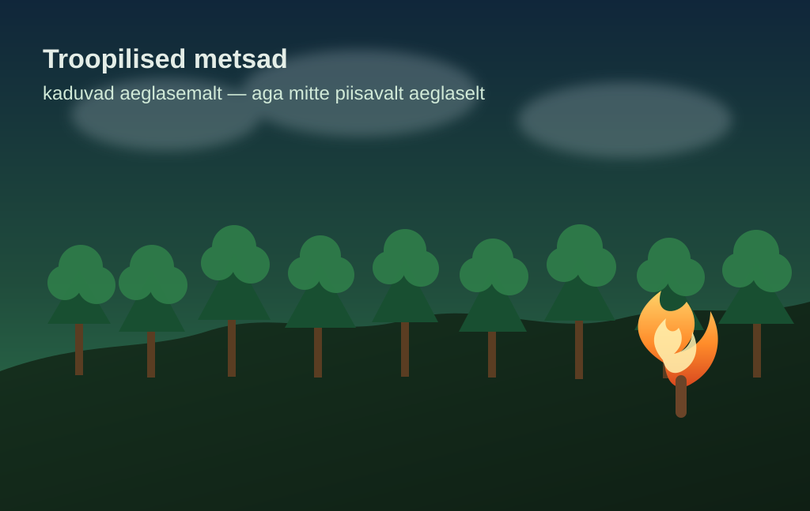

Troopiliste metsade kadu aeglustus, kuid tuleoht ei kao

BBC kirjutab, et 2025. aastal kadus maailmas umbes 43 000 ruutkilomeetrit vanu troopilisi metsi — umbes Taani suurune tükk maakerast. See on küll parem kui 2024. aasta rekordiline kaotus, aga endiselt piisavalt suur, et mitte mingil juhul võiduparaadiks kvalifitseeruda.
Langus tuli osalt sellest, et 2024. aasta erakordsed põlengud taandusid ning Brasiilias, Colombias ja Malaisias aitasid tugevamad kaitsemeetmed. Ehk: kui poliitikat päriselt teha, näitab loodus vähemalt mõningast tänulikkust.
Teadlaste suur mure on siiski see, et kliimamuutus ja El Niño võivad tuleohtu uuesti võimendada. 2030. aasta lubadus metsakao peatamiseks on endiselt kaugel, nii et metsad ei võida aega mitte pressiteadetest, vaid üsna igavatest, aga vältimatutest otsustest.
Loe algallikat: BBC News – "Metsakadu aeglustus, kuid El Niño tulekahjud võivad edusamme ohustada"
selle artikli sisu sõnastatud AI poolt: (mudel gpt-5.4-mini)